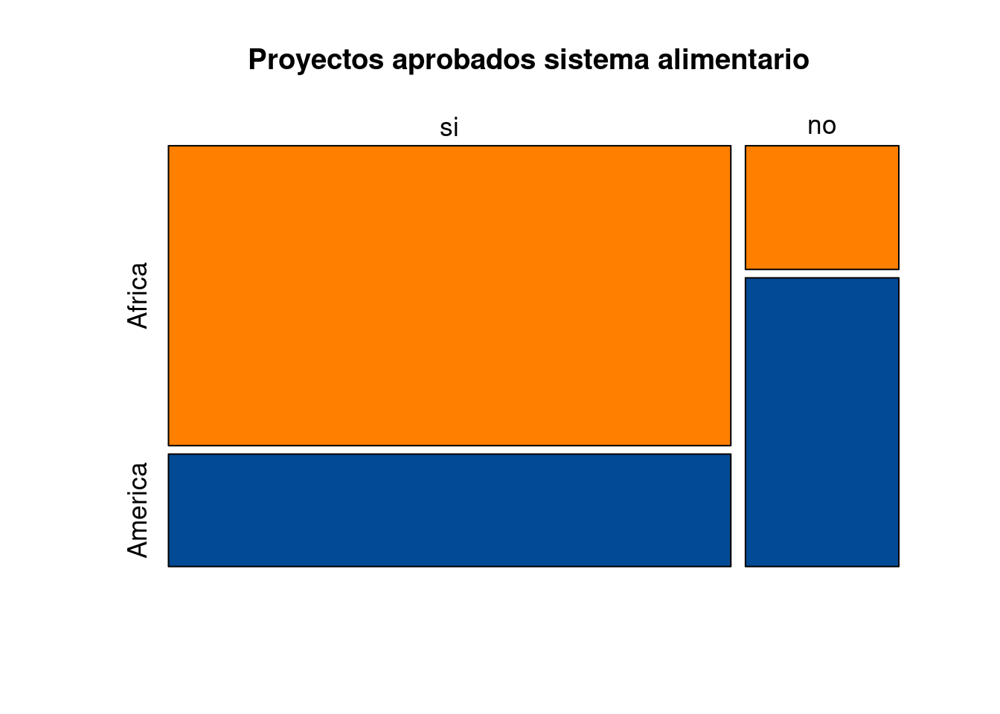
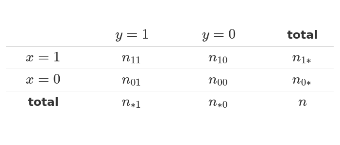

Se considera como un coeficiente no paramétrico ( no requiere verificación de supuestos), propuesto por Charles Spearman y se basa en los rangos obtenidos para las variables \(X\) y \(Y\).
\[\gamma_{s} = \dfrac{ \sum_{i=1}^{n}\Big[\big( R_{i}(x) - \overline{R}(x)\big) \Big]}{\sqrt{\Bigg[ \sum_{i=1}^{n} \Big(R_{i}(x) - \overline{R}(x)\Big)^{2} \Bigg] \Bigg[ \sum_{i=1}^{n} \Big(R_{i}(y) - \overline{R}(y)\Big)^{2} \Bigg]}}\]
Los rangos se obtienen al ordenar los datos y asignarles a cada valor el número del orden correspondiente (\(1,2,3,4,5...n\)) \(R_{i}(x)\) y \(R_{i}(y)\)
Para el caso de variables cualitativas existen varios indicadores para medir el grado de asociación entre ellas como son:
Phi, Coeficiente de contingencia, V de Cramer, Lambda, Kappa : para tablas de contingencia con variables cualitativas en escala nominal.
Gamma, Tau b de Kendall, Tau c de Kendal, D de Somers : para variables cualitativas en escala ordinal
Eta : para tablas con variables de intervalo y nominal
library(paqueteMETODOS)
data(biomasa) # data contenida en paqueteMET
head(biomasa) # primeros 6 registros de la data# A tibble: 6 × 8
finca mg bio_aerea bio_sub bio_total area_foliar diametro altura
<chr> <chr> <dbl> <dbl> <dbl> <dbl> <dbl> <dbl>
1 FINCA_1 GENOTIPO_1 12.8 0.93 13.7 44.5 4.7 5
2 FINCA_1 GENOTIPO_1 13.9 0.69 14.6 39.7 5.3 5.6
3 FINCA_1 GENOTIPO_1 15.1 0.78 15.9 45.6 4.8 5.8
4 FINCA_1 GENOTIPO_1 8.08 0.91 8.99 29.5 3.2 4.3
5 FINCA_1 GENOTIPO_1 5.58 1.41 6.99 22.5 2.2 3.3
6 FINCA_1 GENOTIPO_2 18.5 0.84 19.3 34.2 6.3 7.9cor(biomasa[,3:8]) %>% # matriz de correlaciones
round(.,3 ) bio_aerea bio_sub bio_total area_foliar diametro altura
bio_aerea 1.000 -0.561 0.999 0.865 0.914 0.861
bio_sub -0.561 1.000 -0.534 -0.590 -0.652 -0.550
bio_total 0.999 -0.534 1.000 0.860 0.908 0.858
area_foliar 0.865 -0.590 0.860 1.000 0.736 0.572
diametro 0.914 -0.652 0.908 0.736 1.000 0.936
altura 0.861 -0.550 0.858 0.572 0.936 1.000library(GGally)
ggpairs(biomasa[,5:8], title="Biomasa") En esta matriz gráfica ademas de los diagramas de puntos que permiten visualizar el tipo de relación lineal entre las variables, permite visualizar la distribución de cada variable, el valor de la correlación entre cada par de variables y su significancia sobre la prueba de hipótesis \(Ho: \rho =0\) frente a \(Ha: \rho \neq 0\).
En este caso todos los valores obtenidos son significativamente diferententes de cero.
Para el caso de variables cualitativas podemos utilizar los coeficientes \(Phi\) o el de \(Cramer\), a través de una tabla de contingencia o de doble entrada, por ejemplo:
tabla = c(80,9,30,21) %>%
matrix(., nrow = 2)
colnames(tabla)=c("Africa", "America")
rownames(tabla)=c("si", "no")
mosaicplot(tabla, cex = 1.1, col = c("#8ECAE6","#023047"), main = "Proyectos aprobados sistema alimentario")

Figura 3.7 Distribución de proyectos aprobados por
continente
Fuente : Ejemplo simulado para fines académicos
Tambien llamado coeficiente de Mathews, corresponde a un indicador de asociación entre dos variables binarias y está basado en el estadístico chi-cuadrado producto de una tabla cruzada o tabla de contingencia \(2 \times 2\)

\[\phi = \dfrac{n_{11}\hspace{.1cm}n_{00}-n_{10}\hspace{.1cm}n_{01}}{\sqrt{n_{1*}\hspace{.1cm}n_{0*}\hspace{.1cm}n_{*0}\hspace{.1cm}n_{*1}}}\]
Se aplica a tablas de contingencia 2x2
Si los elementos estan concentrados en la diagonal de la tabla de contingencia, su valor será positivo, mientras que si se salen de esta diagonal su valor será negativo.
Está relacionado con el estadístico chi-cuadrado de las tablas de contingencia 2x2. \(\phi = \sqrt{\chi^2/n}\)
# install.packages("DescTools")
library(DescTools)
Attaching package: 'DescTools'The following objects are masked from 'package:psych':
AUC, ICC, SDcat("Coeficiente Phi : ", Phi(tabla)) Coeficiente Phi : 0.3643192Mide la inensidad de la relación entre dos variables categóricas en terminos del tamaño de la chi-cuadrado de independencia.
\[V = \sqrt{\dfrac{\chi^2}{n(k-1)}}\]
Donde :
\(n\) : total de observaciones en la tabla \(k\) : menor valor entre el número de filas menos 1 y el número de columnas menos 1
# install.packages("DescTools")
library(DescTools)
cat("Coeficiente V de Cramer :", CramerV(tabla)) Coeficiente V de Cramer : 0.3643192Estos coeficientes varia entre \(-1\) y \(1\), en este caso presentan un nivel bajo en relación entre las variables.